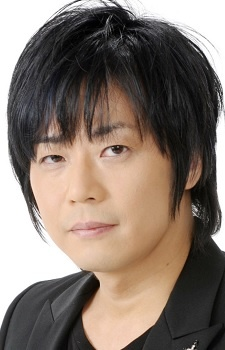

- Fate/Apocrypha

- Black Butler
- Black Butler: His Bulter, Performer
- Black Butler 2
- Black Butler 2 Specials
- Black Butler Picture Drama
- Black Butler: Book of Circus
- Black Butler: Book of Murder
- Black Butler: Book of the Altantic
|  |
Kouji Yusa is a Japanese actor and narrator. Yusa voiced Gin Ichimaru in Bleach and Loki in Divine Gates. He was once married to Kanako Mitsuhashi but divorced.
|
|---|
| |
Lancer of Red |
|
Lancer of Red is the Lancer-class servant of Shirou Kotomine of the Red Faction. His true name is Karna, the son of the Sun God. His personality is cold and unforgiving. His strongest weapon was his "will" and posses a strong will and heart. |
| |
Lau |
|
Lau is the branch manager of a Profitable Chinese trading company's English operations and an acquintance of both Ciel and Madam Red. He is an easygoing and carefree man who frequently smiles while smoking. His assistance/personal assassin is Ran-Mao. |